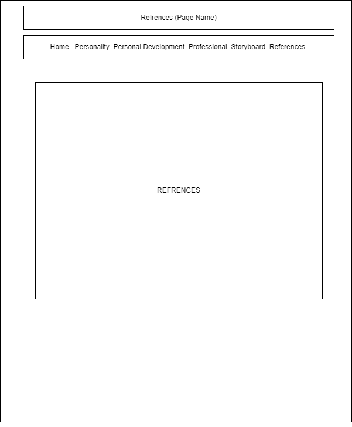

Wireframe

Home |

Personality Page |

Personal Development Page |
|
Professional page |
Storyboard Page |

Reference Page |
List of Pages and Their Intent
-
Home
This page serves as the entry point to the website and provides external links to other websites of interest. It also includes a bookmark for easy navigation within the site and a clickable image that opens an email client for communication. -
Personality
The personality page delves into how the website owner's strongest trait, emotions, or hobbies impact their academic life, with textual descriptions and possible images. It also shares a favorite scene, personal motto, or a quote from a hero, along with an explanation of the chosen hero's significance. Furthermore, it presents the results of an online personality test and reflects on its validity. -
Personal Development
This page summarizes and reflects on the content read in chapters 4-7 of "Twelve Pillars" by Jim Rohn and Chris Widener. Additionally, it mentions the website owner's degree program and highlights the top three skills they have acquired throughout their academic journey. -
Professional
This dedicated page showcases the professional aspects of the website owner. It features a visually appealing resume or curriculum vitae (CV) using modern design templates. Additionally, it communicates the individual's professional vision and mission and offers insights into the job requirements and qualifications for their desired career. -
StoryBoard
The storyboard page provides a visual representation of the website's layout through a wireframe design. It lists the various pages on the website and outlines their intended purposes. It also describes the overall theme of the site, including color schemes, graphics, and the target audience. Furthermore, it enumerates the specific features to be incorporated, such as galleries, maps, videos, and audio elements, and provides a hosting link for accessing the website. > -
Reference
The reference page compiles bibliographic sources used for assistance during the website's creation, following the APA format for citations. Each source is accompanied by a brief description summarizing its purpose and relevance in supporting the website's content.
Site Theme
This website bursts with lively colors on every page, giving it a vibrant and modern feel.I carefully picked these colors to make the site playful and energetic. The homepage welcomes you with a burst of lively shades, while the professional and personal pages embrace bold and cheerful colors. This creates a contemporary and engaging design that's easy on the eyes. The colors not only look good but also add energy, making it a joy to explore the site. Each section blends colors and content seamlessly, creating a pleasant and lively experience that leaves a lasting impression of modernity and vitality.
Features
- Gallery
- Maps
- Video
- Audio
Hosting Link
You can access the hosted website at the following link: Your Website